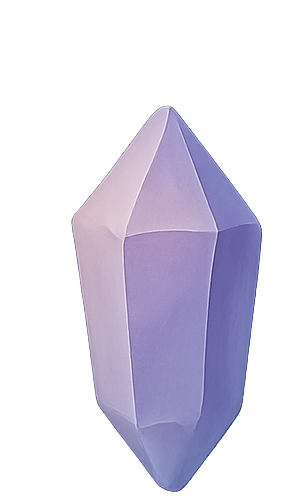
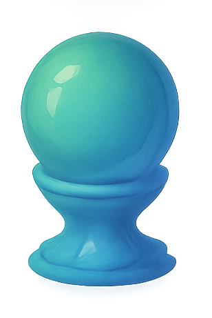
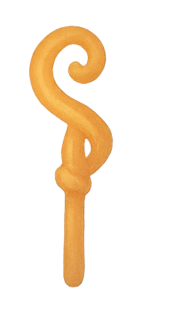
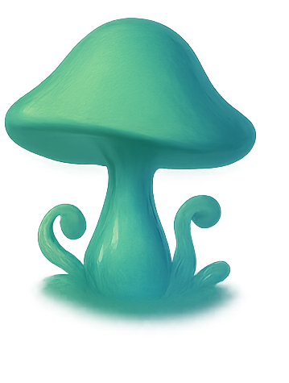
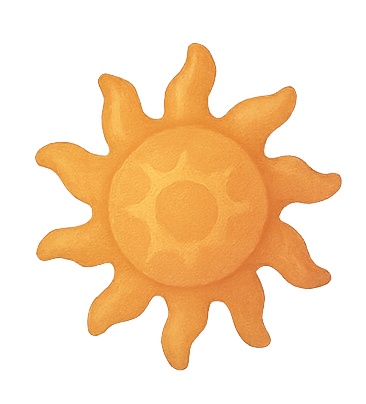
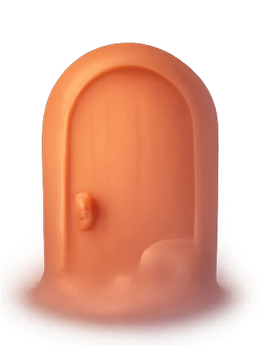

Inspired Yayoi Kusama and her colour palette, explorations with
using mouse as a paintbrush
Week 5
Sketches with P5.js

Add colour to this image
To add colour to this image drag your mouse across.
Week 5
Sketches with P5.js

Web Cam
To explore this sketch you must enable your web cam.
Week 5
Sketches with P5.js
Vibrating font
Drag the mouse from left to right to reveal the text by adding
circles to the font
Week 6
Sketches with P5.js

Sound and text
To use this sketch, first type your text, then click your mouse
to activate the sound, explore how the sound changes the text.
Week 6
Sketches with P5.js

Microphone
Explore how your microphone changes the size of the shape.
Week 6
Sketches with P5.js
Buttons
Explore the sketch my clicking the buttons.
Other
Sketches with P5.js

Circles
Draw with circles
Other
Sketches with P5.js
Bubbles
Please note that this sketch was made drawing inpiration from
'Floating bubbles by Cy1503' and the use of AI to troubleshoot
some issues.
https://editor.p5js.org/cy1503/sketches/f-4AAaeuI
Other
Sketches with P5.js

Particles
Please note that this sketch was made drawing inspiration from
'Mouse particle attraction by Chuffrey' and the use of AI to
troubleshoot some issues. https://editor.p5js.org/chuffrey/sketches/Bkk7EKNoe